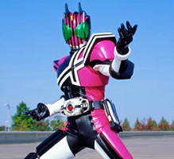

・宝生永夢(仮面ライダーエグゼイド)
演・飯島寛騎
平成仮面ライダーシリーズ18作目『仮面ライダーエグゼイド』の主人公。
聖都大学附属病院の研修医であり、天才ゲーマー「M」としての顔も持つ青年で、
仮面ライダーエグゼイドの変身者。
普段は患者の事を第一に考えほとんどの相手に敬語で接する好青年だが、
ゲームをするときやエグゼイドとして戦うときは性格が豹変し、
一人称も僕から俺に変わる。
ゲーマーとしての「M」は天才ゲーマーの名に恥じぬ技術と知識を持っており、
それを利用して敵のバグスターと戦う。
彼にまつわる様々な真実は本編のストーリーと密接に結びついており、
さらにとても重いものばかりになっている。
エグゼイドのストーリーはとても完成度が高く、
その結果主人公の永夢も好きになりました。
エグゼイドは他の登場キャラも魅力的なキャラばかりで、
仮面ライダーの中でも恐らく一番好きな作品です。
・門矢士(仮面ライダーディケイド)
演・井上正大
平成仮面ライダーシリーズ10作目『仮面ライダーディケイド』の主人公。
いつの間にか光写真館に居候していた青年で素性不明、本人も過去の記憶がない。
『世界の破壊者』として、世界を救う旅、そして自分の世界を探す旅をする。
かなりの自信家で、誰に対しても尊大な態度を取る。
その過去からか生身でも何でも出来るハイスペック人間。
本人と作品の設定により後の作品にも度々顔を出しており、
後述の『仮面ライダージオウ』でも重要な役割を果たす。
個人的には本編終盤や劇場版で見せた、
『敵に対して容赦の無い破壊者としてのディケイド』が大好きです。
全てのライダーの力を使いこなし過去のライダーを圧倒的に倒していく姿が、
とても格好良く見えました。
・常磐ソウゴ(仮面ライダージオウ)

演・奥野壮
平成仮面ライダーシリーズ最後の20作目『仮面ライダージオウ』の主人公。
『王様』を目指す普通(？)の高校生。
世界中の全ての人を幸せにするために王様を目指すという
普通とはずれていながらも優しい青年。
『最低最悪の魔王となる未来』を知りながらもそれに抗い、
『未来で魔王となる自分』を倒そうとする者とも打ち解けようとする
精神的強さを持つ。
「なんか行ける気がする。」が口癖で、この単純な理由だけで行動に移し、
それをこなしてしまう程の才能も持ち合わせている。
作品自体がかなりぶっ飛んでて
リアルタイムで見ていてとても面白かった作品です。
彼をとりまく環境がひたすらに複雑で、
その中でも必死に戦い続けるのを見ている内に好きになっていました。